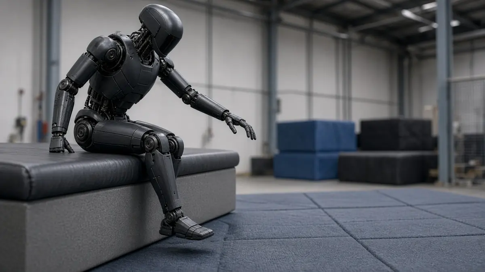
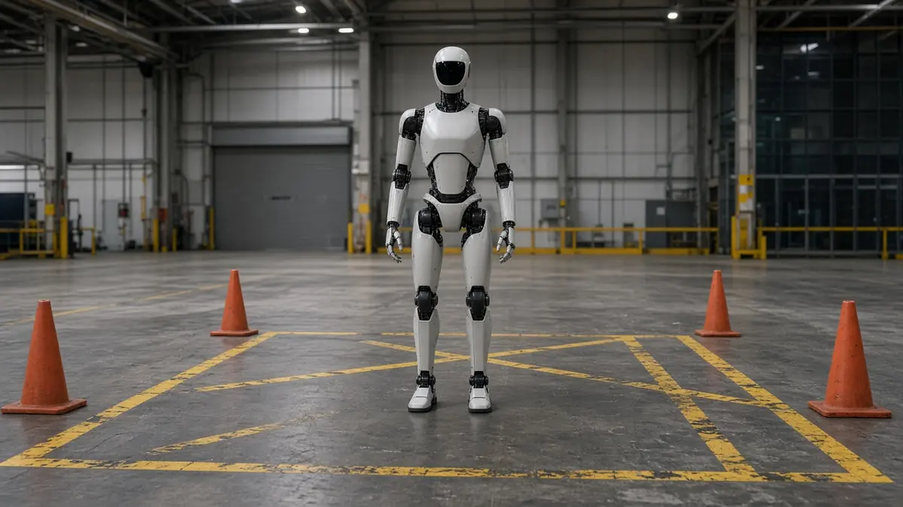

Trending Unitree
Why Unitree's H2-X "Guardian" video is getting attention
Short answer: Unitree's H2-X "Kung Fu Legend Guardian" teaser video, released on 21 October 2026, has been widely covered because it shows a humanoid performing martial-arts moves and staged security and rescue scenes. Unitree has released few specifications, and outlets note it is unclear how autonomous the demos were.
Interesting Engineering, CNBC-TV18 and TechRadar describe the clip: kicks and punches that dent scrapyard cars, a jump from a platform marked four metres high, and staged scenes in which the robot steps between a woman and a person carrying a weapon, pushes a person away from an approaching car and lifts the front of a vehicle above a dummy.

On X, Unitree described the robot as offering "powerful performance to serve and guard you" with a maximum endurance of approximately eight hours, CNBC-TV18 reports; the on-screen safety text calls the figure standing time and advises staying two to three metres away. Interesting Engineering says the H2-X is based on Unitree's H2, which the company describes as about 1.8 metres tall and 70 kg. No price or release date has been announced, TechRadar and Interesting Engineering report.

Interesting Engineering and CNBC-TV18, the latter citing SCMP, say Unitree has not said whether the actions were autonomous, remotely controlled or pre-programmed. TechRadar calls the video more tech demo than consumer product and says it doubts such a robot could clear consumer certification as a personal bodyguard; that is the outlet's view, not Unitree's.